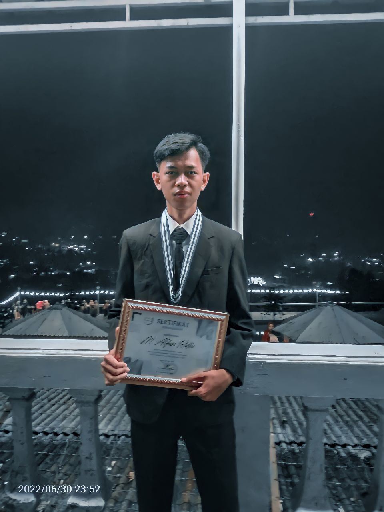

Perkenalkan nama saya M.Alfan Ridho,
saya adalah mahasiswa di STT-NF
program studi Teknik Informatika
Pendidikan formal
- SDN Palsigunung, 2010
- MTS Al-Husna, 2016
- SMK Harapan Bangsa, 2019
- STT Nurul Fikri, 2022
Kemampuan
- Mampu mengoperasikan office
- Mampu melakukan konfigurasi routing
Pengalaman
- Pernah PKL di Kantor Kelurahan Cijantung